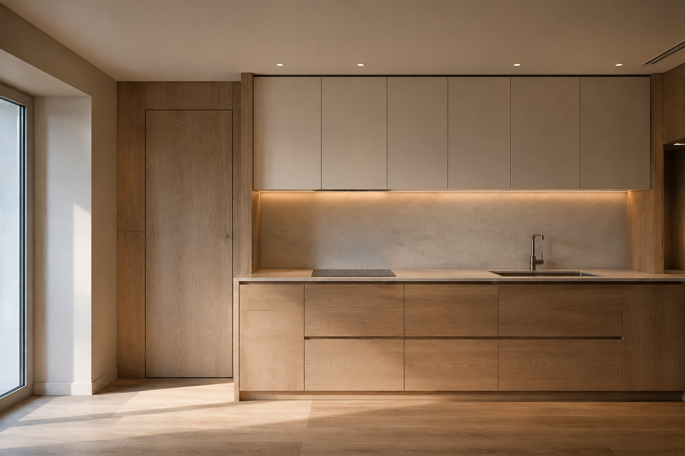
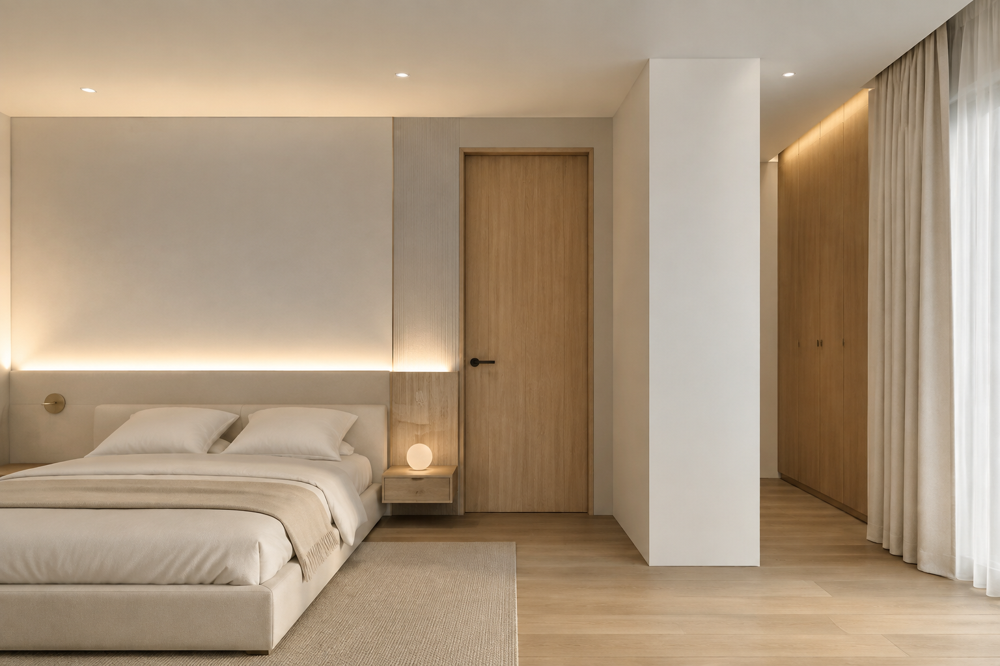
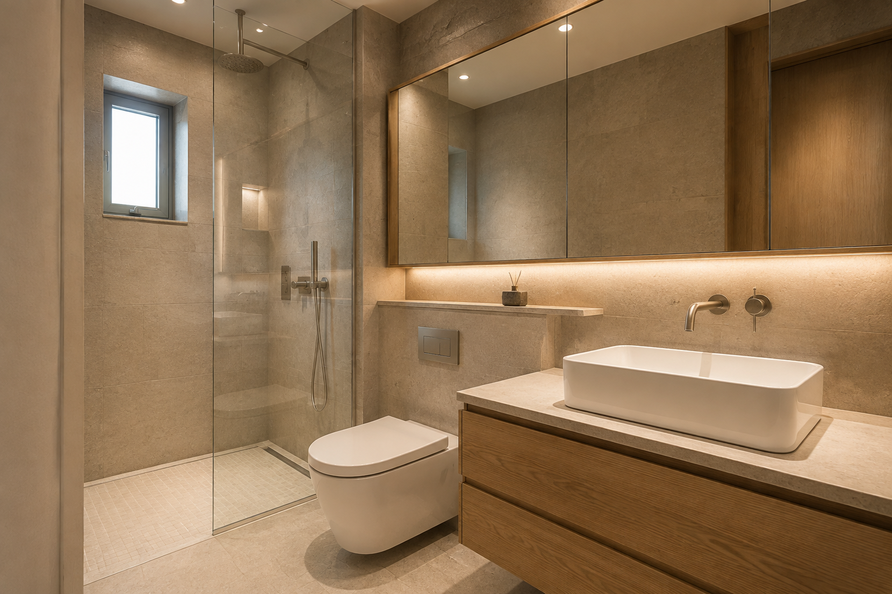

01 · LIVING
거실 · 얇은 선과 부드러운 빛
웜화이트 벽면, 오크 바닥, 아이보리 커튼을 기본으로 합니다. 천장 가장자리 한 구간에 간접조명을 집중해 과한 조명 장식을 줄입니다.
도장 / 도배 선택도장은 균일한 무광 면을 만들지만 바탕 보수가 중요합니다. 도장 질감 벽지는 대안이며 이음매·패턴과 현장 샘플을 확인합니다.
셀프 3/5 · 천장·전기 공사는 전문가모든 이미지는 AI로 새로 생성한 디자인 제안입니다. 동일 현장의 실측 도면이나 실제 시공사진이 아니며, 제품·치수·접합 상세는 현장 확인 후 결정합니다.
CASE 01 → CASE 02
CASE 01이 그린 컬러로 공간의 인상을 만들었다면, CASE 02는 밝은 벽과 자연스러운 나뭇결의 비율로 분위기를 만듭니다. 모든 면을 우드로 채우지 않고 도어·바닥·하부장처럼 선택한 영역에 반복합니다.
디자인은 먼저 정하되, 완전 무몰딩을 필수 조건으로 만들지는 않습니다. 얇은 걸레받이와 슬림 문선으로 비슷한 인상을 만드는 현실적인 대안도 함께 제안합니다.
ROOM BY ROOM
가구 구매보다 벽면·천장·문선·조명·마감재의 조합에 집중합니다.
웜화이트 벽면, 오크 바닥, 아이보리 커튼을 기본으로 합니다. 천장 가장자리 한 구간에 간접조명을 집중해 과한 조명 장식을 줄입니다.
도장 / 도배 선택도장은 균일한 무광 면을 만들지만 바탕 보수가 중요합니다. 도장 질감 벽지는 대안이며 이음매·패턴과 현장 샘플을 확인합니다.
셀프 3/5 · 천장·전기 공사는 전문가
화이트 상부장과 우드 하부장으로 시각적 무게를 나눕니다. 작업대 조명은 손 그림자를 줄이는 위치에 두고 배선과 점검 공간을 계획합니다.
교체보다 먼저 확인기존 몸통과 경첩 상태가 좋으면 도어 필름·부분 교체를 검토합니다. 물 먹은 판재나 들뜬 면은 필름으로 감추지 않고 보수 범위를 먼저 정합니다.
셀프 3/5 · 넓은 필름 면은 반셀프 권장
아이보리 벽과 패브릭, 한쪽 우드 면으로 톤을 정리합니다. 눈높이에서 광원이 직접 보이지 않도록 조명을 계획합니다.
현실적인 대안목공 헤드월을 만들지 않아도 포인트 벽지와 차분한 커튼, 기존 위치의 등기구 교체로 분위기를 바꿀 수 있습니다.
셀프 2/5 · 배선·등기구 설치는 전문가
베이지 스톤 톤과 단순한 수납, 거울 조명을 조합합니다. 대형 벽 타일과 바닥 타일의 규격은 별개로 검토합니다.
디자인과 유지관리의 균형유리 파티션은 물때 청소가 필요하고, 매립 수전·벽걸이 도기는 보수 접근성과 추가공사 범위를 확인해야 합니다. 노출형 수전과 일반 양변기도 현실적인 대안입니다.
셀프 5/5 · 방수·배관·타일은 전문가MOLDING OPTIONS
몰딩은 벽·천장·바닥의 접합부를 덮는 역할도 합니다. 철거만 하면 틈과 손상이 드러날 수 있으므로 바탕 보수와 마감 방식을 함께 결정합니다.
얇은 문선과 벽색 걸레받이를 유지합니다. 보호·보수에 유리하고 공사 범위를 줄이기 쉽습니다.
천장과 벽의 접합부를 정리합니다. 평활도와 균열 대응 상세에 따라 목공·퍼티 범위가 달라집니다.
문틀과 벽 두께, 경첩, 마감 연속성을 함께 설계합니다. 문만 바꾸는 공사가 아니므로 전문가 시공으로 구분합니다.
BEFORE YOUR ESTIMATE
샘플 비교, 보양, 조건에 맞는 소면적 마감. 공구와 재시공 비용도 포함합니다.
도장·도배·필름을 공정별로 의뢰하고 준비·정리를 직접 담당합니다.
무몰딩·히든도어·천장조명·욕실처럼 여러 공정이 연결되는 범위입니다.
실측, 기존 마감 상태, 철거 범위, 제품 규격을 받은 후 자재비와 시공비를 나눕니다.
난이도는 초보자 기준의 참고 등급이며 확정 견적은 아닙니다.